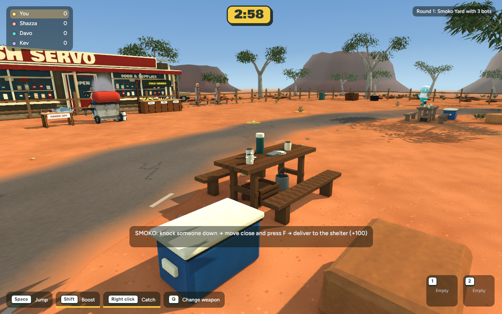
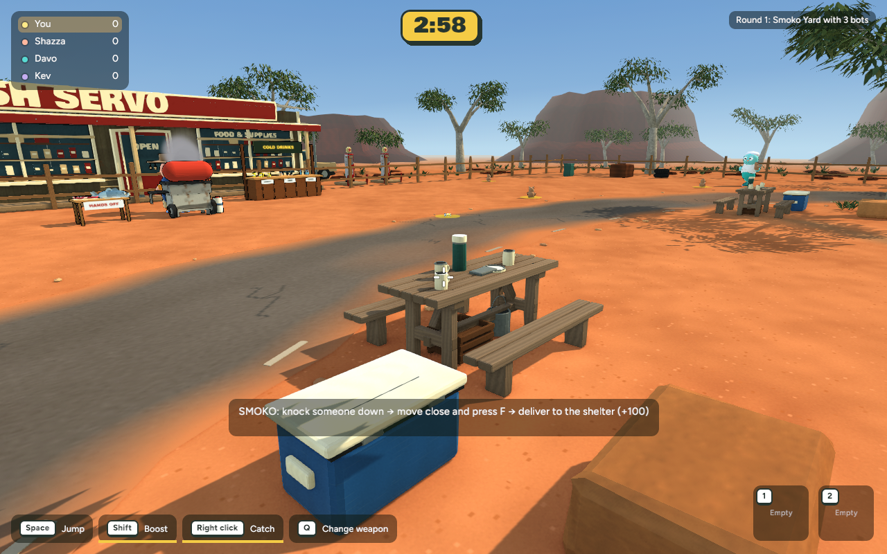
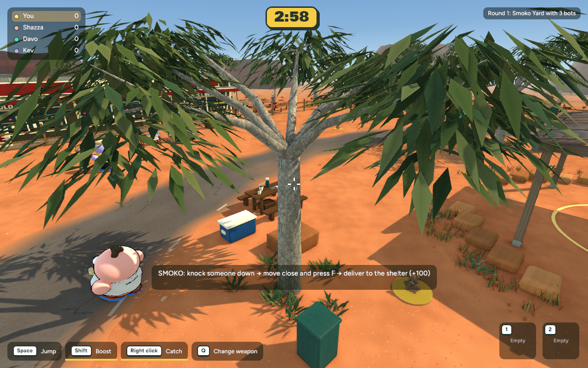
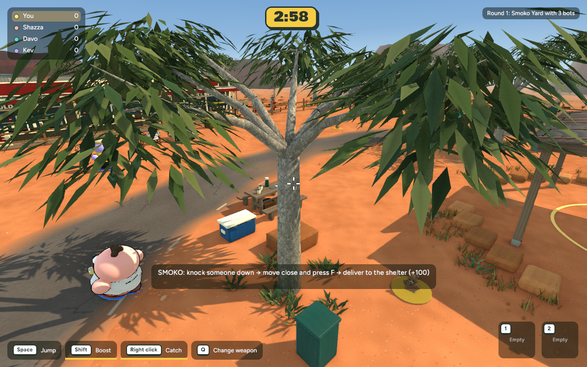
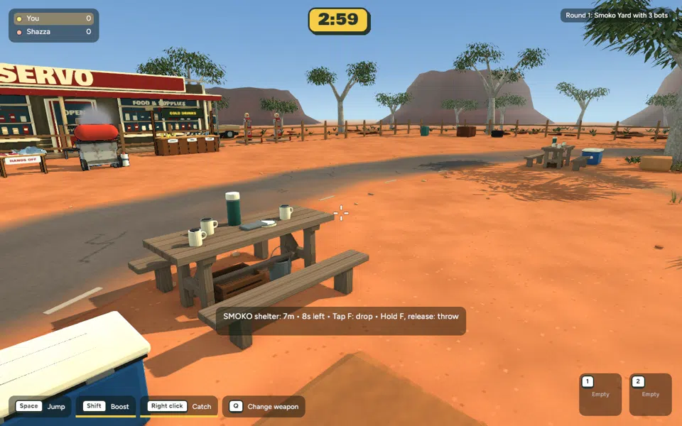
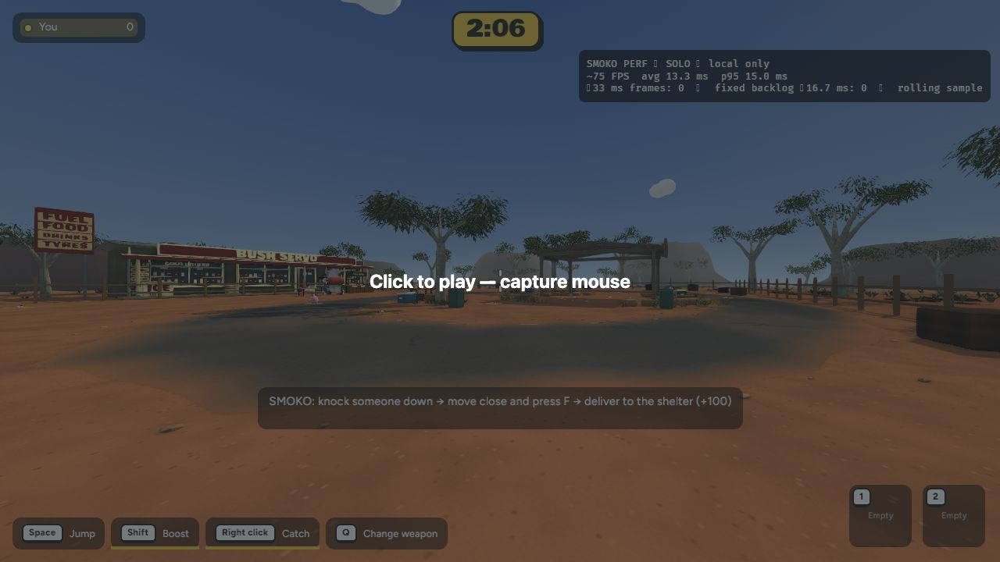
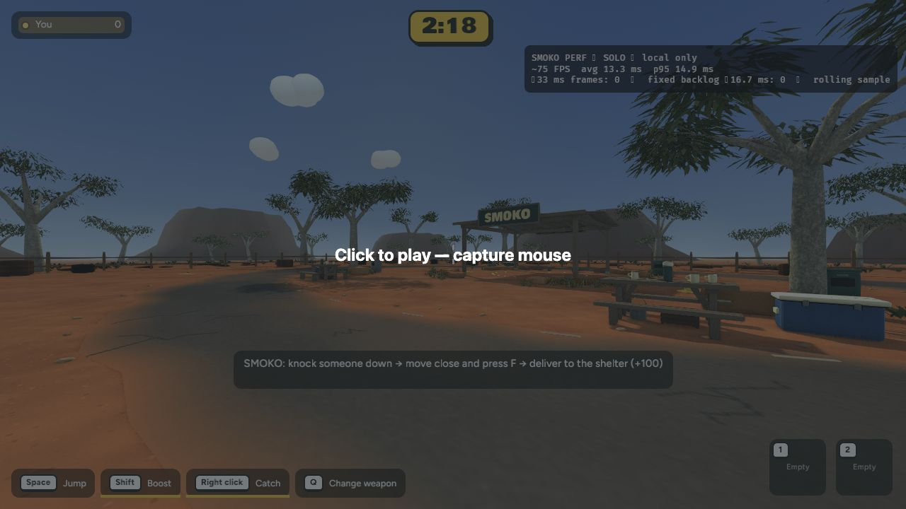

Implemented game captures · 6 November 2026 · Awaiting review. Not committed or published.
The western table, benches and esky now match the eastern setting: aligned timber grain, exposed ends, split bench planks, stronger supports and refined esky fittings. Original footprints, carrying routes and all other scenery remain unchanged.
Identical native camera and capture frame.


Identical native camera and capture frame.



Smoko carry-and-deliver check passed: +100, no opponent left carried. Backyard smoke passed.
Native mean: close 8.401 → 8.396 ms; gameplay 8.901 → 8.757 ms. No meaningful regression. Small differences are measurement variation.
+2,268 triangles and 176 KB; no new texture images or material batches. Browser samples: ~75 FPS, 13.3 ms mean before and after; p95 15.0 → 14.9 ms. These are stationary samples with differing spawn cameras, not exact browser A/B or multiplayer testing.


cd /Users/marcus/Claude/australian-bbq/rust ~/.cargo/bin/cargo run -p bbq_app --release -- --menu
Solo game → Bush Servo → Play Smoko.